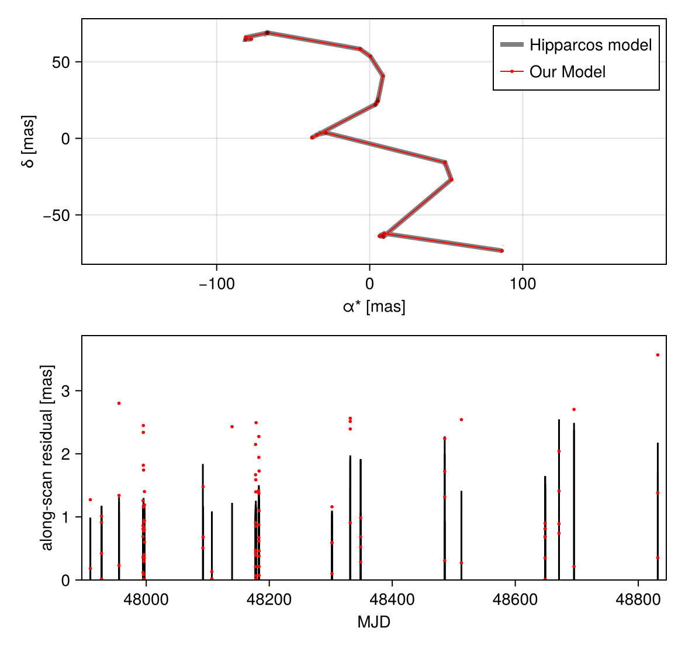
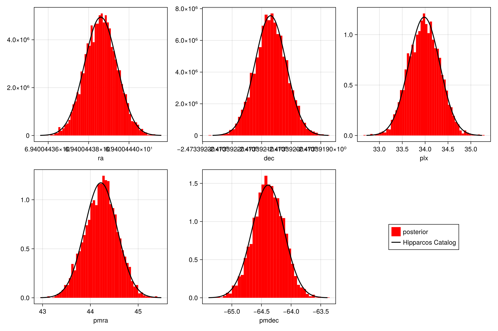
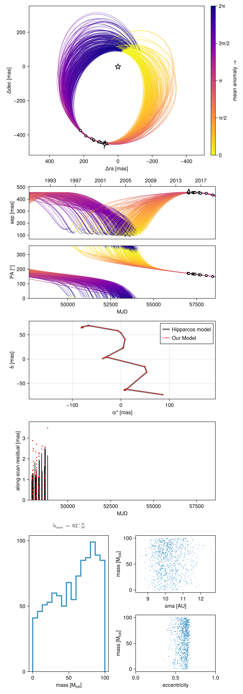

Hipparcos Modelling
This tutorial explains how to model Hipparcos IAD data. The first example reproduces the catalog values of position, parallax, and proper motion. The second uses Hipparcos to constrain the mass of a directly imaged planet.
Reproduce Catalog Values
This is the so-called "Nielsen" test from Nielsen et al (2020) and available in Orbitize!.
We start by using a system with a planet with zero mass to fit the straight line motion.
using Octofitter
using Distributions
using CairoMakie
hip_like = Octofitter.HipparcosIADLikelihood(;
hip_id=21547,
renormalize=true, # default: true
)
@planet b AbsoluteVisual{KepOrbit} begin
mass = 0.
e = 0.
ω = 0.
a = 1.
i = 0
Ω = 0.
tp = 0.
end
@system c_Eri_straight_line begin
M = 1.0 # Host mass not important for this example
rv = 0.0 # system RV not significant for this example
plx ~ Uniform(0,100)
pmra ~ Uniform(-100, 100)
pmdec ~ Uniform(-100, 100)
# It is convenient to put a prior of the catalog value +- 10,000 mas on position
ra_hip_offset_mas ~ Normal(0, 10000)
dec_hip_offset_mas ~ Normal(0, 10000)
dec = hip_like.hip_sol.dedeg + system.ra_hip_offset_mas/60/60/1000
ra = hip_like.hip_sol.radeg + system.dec_hip_offset_mas/60/60/1000/cosd(system.dec)
ref_epoch = Octofitter.hipparcos_catalog_epoch_mjd
end hip_like b
model = Octofitter.LogDensityModel(c_Eri_straight_line)LogDensityModel for System c_Eri_straight_line of dimension 5 with fields .ℓπcallback and .∇ℓπcallback
We can now sample from the model using Hamiltonian Monte Carlo. This should only take about 15 seconds.
# Typical depth is ~4, so limiting the max_depth down from default 12 speeds warm-up
chain = octofit(model, iterations=4_000, max_depth=6)Chains MCMC chain (4000×30×1 Array{Float64, 3}):
Iterations = 1:1:4000
Number of chains = 1
Samples per chain = 4000
Wall duration = 14.64 seconds
Compute duration = 14.64 seconds
parameters = plx, pmra, pmdec, ra_hip_offset_mas, dec_hip_offset_mas, M, rv, dec, ra, ref_epoch, b_mass, b_e, b_ω, b_a, b_i, b_Ω, b_tp
internals = n_steps, is_accept, acceptance_rate, hamiltonian_energy, hamiltonian_energy_error, max_hamiltonian_energy_error, tree_depth, numerical_error, step_size, nom_step_size, is_adapt, loglike, logpost, tree_depth, numerical_error
Summary Statistics
parameters mean std mcse ess_bulk ess_tail ⋯
Symbol Float64 Float64 Float64 Float64 Float64 ⋯
plx 33.9784 0.3434 0.0057 3669.6023 3248.2002 ⋯
pmra 44.2302 0.3414 0.0045 5730.9059 3490.1790 ⋯
pmdec -64.3827 0.2590 0.0041 4064.8572 2955.8045 ⋯
ra_hip_offset_mas 0.0036 0.1934 0.0030 4279.4996 3019.8098 ⋯
dec_hip_offset_mas 0.0054 0.2871 0.0048 3546.7208 3107.4334 ⋯
M 1.0000 0.0000 NaN NaN NaN ⋯
rv 0.0000 0.0000 NaN NaN NaN ⋯
dec -2.4734 0.0000 0.0000 4279.4986 3019.8098 ⋯
ra 69.4004 0.0000 0.0000 3546.7208 3107.4334 ⋯
ref_epoch 48348.5625 0.0000 NaN NaN NaN ⋯
b_mass 0.0000 0.0000 NaN NaN NaN ⋯
b_e 0.0000 0.0000 NaN NaN NaN ⋯
b_ω 0.0000 0.0000 NaN NaN NaN ⋯
b_a 1.0000 0.0000 NaN NaN NaN ⋯
b_i 0.0000 0.0000 NaN NaN NaN ⋯
b_Ω 0.0000 0.0000 NaN NaN NaN ⋯
b_tp 0.0000 0.0000 NaN NaN NaN ⋯
2 columns omitted
Quantiles
parameters 2.5% 25.0% 50.0% 75.0% ⋯
Symbol Float64 Float64 Float64 Float64 ⋯
plx 33.3296 33.7392 33.9790 34.2136 ⋯
pmra 43.5555 44.0023 44.2417 44.4600 ⋯
pmdec -64.8977 -64.5526 -64.3834 -64.2045 - ⋯
ra_hip_offset_mas -0.3735 -0.1259 0.0027 0.1339 ⋯
dec_hip_offset_mas -0.5470 -0.1908 0.0073 0.1982 ⋯
M 1.0000 1.0000 1.0000 1.0000 ⋯
rv 0.0000 0.0000 0.0000 0.0000 ⋯
dec -2.4734 -2.4734 -2.4734 -2.4734 ⋯
ra 69.4004 69.4004 69.4004 69.4004 ⋯
ref_epoch 48348.5625 48348.5625 48348.5625 48348.5625 483 ⋯
b_mass 0.0000 0.0000 0.0000 0.0000 ⋯
b_e 0.0000 0.0000 0.0000 0.0000 ⋯
b_ω 0.0000 0.0000 0.0000 0.0000 ⋯
b_a 1.0000 1.0000 1.0000 1.0000 ⋯
b_i 0.0000 0.0000 0.0000 0.0000 ⋯
b_Ω 0.0000 0.0000 0.0000 0.0000 ⋯
b_tp 0.0000 0.0000 0.0000 0.0000 ⋯
1 column omitted
Plot the posterior values:
octoplot(model,chain,show_astrom=false,show_astrom_time=false)
We now visualize the model fit compared to the Hipparcos catalog values:
using LinearAlgebra, StatsBase
fig = Figure(size=(1080,720))
j = i = 1
for prop in (
(;chain=:ra, hip=:radeg, hip_err=:e_ra),
(;chain=:dec, hip=:dedeg, hip_err=:e_de),
(;chain=:plx, hip=:plx, hip_err=:e_plx),
(;chain=:pmra, hip=:pm_ra, hip_err=:e_pmra),
(;chain=:pmdec, hip=:pm_de, hip_err=:e_pmde)
)
global i, j, ax
ax = Axis(
fig[j,i],
xlabel=string(prop.chain),
)
i+=1
if i > 3
j+=1
i = 1
end
unc = hip_like.hip_sol[prop.hip_err]
if prop.chain == :ra
unc /= 60*60*1000 * cosd(hip_like.hip_sol.dedeg)
end
if prop.chain == :dec
unc /= 60*60*1000
end
if prop.hip == :zero
n = Normal(0, unc)
else
mu = hip_like.hip_sol[prop.hip]
n = Normal(mu, unc)
end
n0,n1=quantile.(n,(1e-4, 1-1e-4))
nxs = range(n0,n1,length=200)
h = fit(Histogram, chain[prop.chain][:], nbins=55)
h = normalize(h, mode=:pdf)
barplot!(ax, (h.edges[1][1:end-1] .+ h.edges[1][2:end])./2, h.weights, gap=0, color=:red, label="posterior")
lines!(ax, nxs, pdf.(n,nxs), label="Hipparcos Catalog", color=:black, linewidth=2)
end
Legend(fig[i-1,j+1],ax,tellwidth=false)
fig
Constrain Planet Mass
We now allow the planet to have a non zero mass and free orbit. We start by retrieving relative astrometry data on the planet, collated by Jason Wang and co on whereistheplanet.com.
astrom_like1,astrom_like2 = Octofitter.Whereistheplanet_astrom("51erib",object=1)We specify our full model:
@planet b AbsoluteVisual{KepOrbit} begin
a ~ truncated(Normal(10,1),lower=0)
e ~ Uniform(0,0.99)
ω ~ UniformCircular()
i ~ Sine()
Ω ~ UniformCircular()
θ ~ UniformCircular()
tp = θ_at_epoch_to_tperi(system,b,57463)
mass = system.M_sec
end astrom_like1
@system cEri begin
M_pri ~ truncated(Normal(1.75,0.05), lower=0.03) # Msol
M_sec ~ Uniform(0, 100) # MJup
M = system.M_pri + system.M_sec*Octofitter.mjup2msol # Msol
rv = 12.60e3 # m/s
plx ~ Uniform(0,100)
pmra ~ Uniform(-100, 100)
pmdec ~ Uniform(-100, 100)
# It is convenient to put a prior of the catalog value +- 1000 mas on position
ra_hip_offset_mas ~ Normal(0, 10000)
dec_hip_offset_mas ~ Normal(0, 10000)
dec = hip_like.hip_sol.dedeg + system.ra_hip_offset_mas/60/60/1000
ra = hip_like.hip_sol.radeg + system.dec_hip_offset_mas/60/60/1000/cos(system.dec)
ref_epoch = Octofitter.hipparcos_catalog_epoch_mjd
end hip_like b
model = Octofitter.LogDensityModel(cEri)LogDensityModel for System cEri of dimension 16 with fields .ℓπcallback and .∇ℓπcallback
Now we sample:
chain = octofit(model)
chainChains MCMC chain (1000×39×1 Array{Float64, 3}):
Iterations = 1:1:1000
Number of chains = 1
Samples per chain = 1000
Wall duration = 436.53 seconds
Compute duration = 436.53 seconds
parameters = M_pri, M_sec, plx, pmra, pmdec, ra_hip_offset_mas, dec_hip_offset_mas, M, rv, dec, ra, ref_epoch, b_a, b_e, b_ωy, b_ωx, b_i, b_Ωy, b_Ωx, b_θy, b_θx, b_ω, b_Ω, b_θ, b_tp, b_mass
internals = n_steps, is_accept, acceptance_rate, hamiltonian_energy, hamiltonian_energy_error, max_hamiltonian_energy_error, tree_depth, numerical_error, step_size, nom_step_size, is_adapt, loglike, logpost, tree_depth, numerical_error
Summary Statistics
parameters mean std mcse ess_bulk ess_tail ⋯
Symbol Float64 Float64 Float64 Float64 Float64 ⋯
M_pri 1.7448 0.0488 0.0016 883.3100 675.8711 ⋯
M_sec 57.0480 28.2481 2.2580 149.9037 274.2849 ⋯
plx 33.9899 0.3448 0.0123 802.4012 550.4177 ⋯
pmra 45.3712 0.6789 0.0497 191.0091 453.2910 ⋯
pmdec -64.2457 0.7363 0.0488 248.4489 309.1744 ⋯
ra_hip_offset_mas -12.6292 6.3313 0.5056 158.9106 275.9595 ⋯
dec_hip_offset_mas -2.1392 2.6209 0.1918 212.9343 266.1152 ⋯
M 1.7993 0.0539 0.0024 494.1546 718.7904 ⋯
rv 12600.0000 0.0000 NaN NaN NaN ⋯
dec -2.4734 0.0000 0.0000 158.9106 275.9595 ⋯
ra 69.4004 0.0000 0.0000 212.9343 266.1152 ⋯
ref_epoch 48348.5625 0.0000 NaN NaN NaN ⋯
b_a 10.2062 0.6434 0.0571 134.7010 133.7886 ⋯
b_e 0.5967 0.0576 0.0043 201.8877 251.6521 ⋯
b_ωy -0.1423 0.3055 0.0279 130.0464 334.5620 ⋯
b_ωx -0.9415 0.1059 0.0045 544.1119 557.3897 ⋯
b_i 2.4641 0.0933 0.0073 159.1131 188.9817 ⋯
⋮ ⋮ ⋮ ⋮ ⋮ ⋮ ⋱
2 columns and 9 rows omitted
Quantiles
parameters 2.5% 25.0% 50.0% 75.0% ⋯
Symbol Float64 Float64 Float64 Float64 ⋯
M_pri 1.6507 1.7129 1.7445 1.7766 ⋯
M_sec 3.9932 33.2986 62.3942 81.3292 ⋯
plx 33.2698 33.7661 33.9943 34.2360 ⋯
pmra 44.0600 44.8711 45.3957 45.9168 ⋯
pmdec -65.6719 -64.6559 -64.2716 -63.8758 - ⋯
ra_hip_offset_mas -22.3238 -17.9876 -13.3917 -7.6094 ⋯
dec_hip_offset_mas -8.4452 -3.4998 -1.4700 -0.3022 ⋯
M 1.6946 1.7656 1.7977 1.8369 ⋯
rv 12600.0000 12600.0000 12600.0000 12600.0000 126 ⋯
dec -2.4734 -2.4734 -2.4734 -2.4734 ⋯
ra 69.4004 69.4004 69.4004 69.4004 ⋯
ref_epoch 48348.5625 48348.5625 48348.5625 48348.5625 483 ⋯
b_a 9.1469 9.7411 10.1171 10.6069 ⋯
b_e 0.4492 0.5666 0.6121 0.6401 ⋯
b_ωy -0.5978 -0.3946 -0.2066 0.1428 ⋯
b_ωx -1.1569 -1.0104 -0.9409 -0.8676 ⋯
b_i 2.2827 2.3968 2.4702 2.5320 ⋯
⋮ ⋮ ⋮ ⋮ ⋮ ⋱
1 column and 9 rows omitted
octoplot(model, chain, show_mass=true)
We see that we constrained both the orbit and the parallax. The mass is not strongly constrained by Hipparcos.